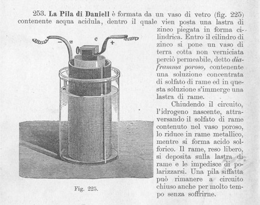
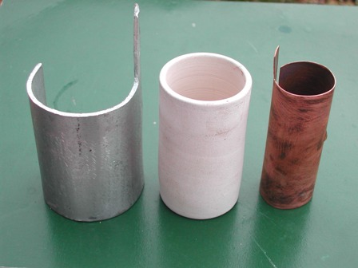
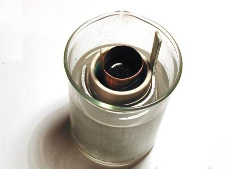
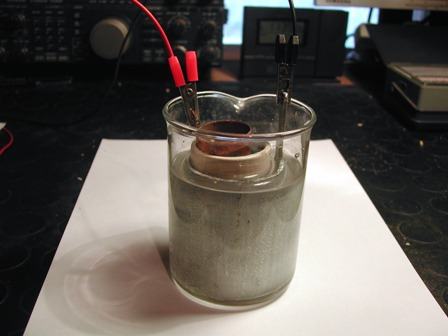
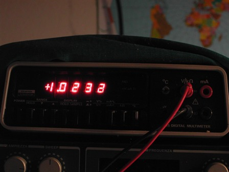

Mi ero fatto fare da un artigiano ceramista, tempo fa, un bel bicchierino di materiale poroso da usare in esperienze di elettrochimica.
Un setto poroso è in pratica un separatore che impedisce (o almeno cerca di farlo) il mescolamento fisico di due soluzioni diverse che si trovano sulle sue facce opposte ma che non si oppone al passaggio degli ioni da una parte e dall'altra.
In parole povere le cariche elettriche lo possono attraversare facilmente, mentre altrettanto non avviene per i liquidi che costituiscono le soluzioni ioniche.
Ho pensato che uno dei primi usi che avrei fatto di questo oggettino in ceramica non verniciata sarebbe stata la costruzione di una pila Daniell, più o meno come la si vede su quel meraviglioso libro della mia bisnonna, lo Squinarol del 1898, di cui ho già parlato e che gelosamente conservo.
Ecco una di quelle suggestive immagini al tratto e relativo commento, come appaiono sul libro dell'esimio professore di Rovereto.

Testo ed immagini, non c'è bisogno di sottolinearlo, sono anni luce lontane dal nostro tempo e proprio per questo suggestive.
Cercando in rete (o sui libri!) si trova tutto quello che si vuole sulle pile, sulla Daniell, sull'elettrochimica, sui potenziali di ossidoriduzione interessati a questa esperienza... eccetera, eccetera... quindi non spenderò una parola in più: diamoci da fare in pratica.
Con l'ausilio di un tubo di ferro ed una morsa ho piegato a forma di semicilindro del diametro di 50 mm una spessa piastrina di zinco, che costituirà l'elettrodo negativo.
Allo stesso modo ho trattato una lamina di rame per l'elettrodo positivo, ottenendo un cilindro di 30 mm di diametro.
Il mio setto poroso ha un diametro di 40 mm, quindi lo zinco lo circonderà all'esterno ed il rame all'interno.
I tre elementi saranno contenuti a loro volta in un becher da 250 ml.


L'anodo al quale avviene l'ossidazione (lo zinco) ed il catodo al quale avviene la riduzione (il rame) devono essere immersi in una soluzione di un loro sale e quindi ho preparato due soluzioni concentrate (circa 1M), rispettivamente di solfato di zinco ZnSO4.7H2O e di solfato di rame CuSO4.5H2O.
La prima riempirà l'intercapedine tra il becher ed il setto poroso e la seconda troverà posto all'interno.
NOTA:
-sui libri di chimica moderni (esclusivamente teorici) e nelle esperienze scolastiche la pila è sempre rappresentata da due soluzioni saline contenute ognuna nel suo contenitore ed il passaggio ionico tra una e l'altra è realizzato con un "ponte salino" contenuto in un tubetto di vetro piegato ad U con le estremità immerse nei due bicchieri.
Se in teoria il sistema funziona, in pratica questo accrocco ha una resistenza interna tanto elevata da rendere la pila capace di generare solo pochi milliampere.
Ho verificato che anche il mio setto poroso lascia a desiderare (pori troppo piccoli), ma che se è fatto bene la superficie di passaggio ionico è grande e la resistenza interna piccola, fermo restando l'identico principio di funzionamento.
Fine della nota.
Immersi i due elettrodi, ecco quanto mi devo aspettare (dalla tabella dei potenziali elettrochimici):
E = E0 (Cu2+/ Cu) - E0 (Zn2+/ Zn) = 0.34 - (- 0.76) = 1.1 volt
Riempiamo la cella con tutti gli elementi e andiamo a verificare con il voltmetro: 1,023 volt, 80 mV scarsi di differenza.


Questo naturalmente a circuito aperto; a circuito chiuso le cose cambiano perchè entra in gioco la resistenza interna della pila e altri fattori.
La pila è costituita da un singolo elemento da poco più di un Volt, che è una tensione troppo piccola per far funzionare qualsiasi utilizzatore; nel caso specifico non è possibile accendere nemmeno un LED, che ha una tensione di soglia minima (LED rosso) di circa 1,6 volt.
Occorrerebbe collegare in serie più elementi di pila, come si faceva una volta, per ottenere la tensione voluta.
Se la pila di John Daniell fu inventata nel 1836, voglio ricordare con ammirazione Sir Humphry Davy, che nella prima decade dell'ottocento riuscì ad isolare il sodio, il potassio, il calcio, lo stronzio, il bario ed il magnesio per elettrolisi, utilizzando addirittura le primitive (nel senso più letterale del termine) pile di Volta, dal bassissimo rendimento.
Un blocchetto del relativo idrossido umido, un piccolo pozzetto con del mercurio, un filo di platino... e via con la corrente, fino ad ottenere un'amalgama, magari di potassio!
Prima o poi provo a ripetere l'esperienza di Sir Humphry, garantito!